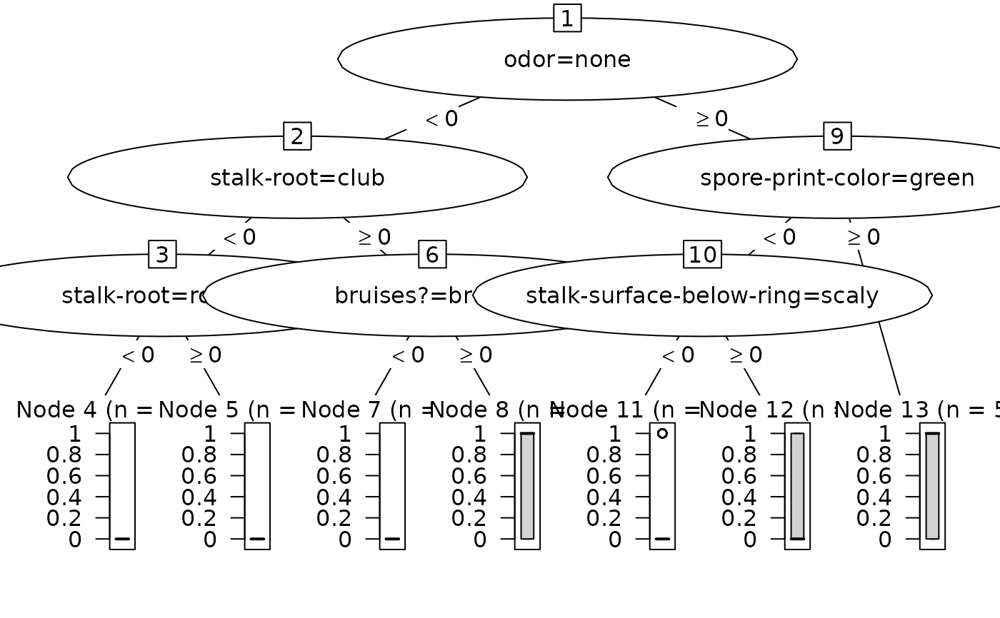

as.party.lgb.Booster.RdConvert a single tree from a lightgbm boosted tree model to a party object for use with partykit visualization and analysis tools.
# S3 method for class 'lgb.Booster'
as.party(obj, tree = 1L, data, ...)An lgb.Booster object from the lightgbm package.
Integer specifying which tree to convert (1-based indexing,
default is 1). For multiclass models with num_class classes and
nrounds boosting rounds, there are num_class * nrounds total trees.
data.frame containing the training data with the response variable included (required). LightGBM models do not store the original training data or response values. You must provide the original data frame that includes both the predictor variables and the response variable.
Not currently used.
A constparty object from the partykit package.
lightgbm models do not store the original training data or response values.
You must provide the original data frame (including the response variable)
via the data parameter for correct terminal node statistics, bar charts,
and other visualizations.
lightgbm stores trees in a tabular format accessible via
lightgbm::lgb.model.dt.tree(). Each tree is represented as rows in a table:
tree_index: 0-based tree index
split_index: 0-based node ID for internal nodes (NA for leaves)
leaf_index: 0-based node ID for leaf nodes (NA for internal)
split_feature: Feature name (character) for splits
threshold: Numeric threshold for splits
decision_type: Split type ("<=", "==", etc.)
left_child: 0-based node ID of left child
right_child: 0-based node ID of right child
leaf_value: Prediction value for leaf nodes
node_parent: 0-based parent node ID
depth: Depth of node in tree
Internally, lightgbm uses 0-based tree and node indices
User-facing tree parameter uses 1-based indexing (R convention)
When tree=1 is requested, we filter to tree_index==0 internally
Internal nodes use split_index, leaf nodes use leaf_index
decision_type "<=": left child when feature <= threshold
right child when feature > threshold
partykit split created with right = FALSE (left interval closed)
if (rlang::is_installed("lightgbm")) {
# Binary classification example
data(agaricus.train, package = "lightgbm")
# Prepare data with response column
train_data <- as.data.frame(as.matrix(agaricus.train$data))
train_data$label <- agaricus.train$label
dtrain <- lightgbm::lgb.Dataset(agaricus.train$data, label = agaricus.train$label)
set.seed(7264)
bst <- lightgbm::lgb.train(
params = list(objective = "binary", max_depth = 3),
data = dtrain,
nrounds = 3,
verbose = -1
)
# Convert first tree - data parameter is required
party_tree <- as.party(bst, tree = 1L, data = train_data)
print(party_tree)
plot(party_tree)
# Regression example
data(mtcars)
reg_data <- mtcars
dtrain_reg <- lightgbm::lgb.Dataset(as.matrix(mtcars[, -1]), label = mtcars$mpg)
set.seed(6381)
bst_reg <- lightgbm::lgb.train(
params = list(objective = "regression", max_depth = 3, min_data_in_leaf = 1),
data = dtrain_reg,
nrounds = 3,
verbose = -1
)
party_tree_reg <- as.party(bst_reg, tree = 1L, data = reg_data)
print(party_tree_reg)
}
#>
#> Model formula:
#> ~`odor=none` + `stalk-root=club` + `stalk-root=rooted` + `bruises?=bruises` +
#> `spore-print-color=green` + `stalk-surface-below-ring=scaly` +
#> `odor=musty` + `odor=foul`
#>
#> Fitted party:
#> [1] root
#> | [2] odor=none < 0
#> | | [3] stalk-root=club < 0
#> | | | [4] stalk-root=rooted < 0: 0.000 (n = 3090, err = 0.0)
#> | | | [5] stalk-root=rooted >= 0: 0.000 (n = 158, err = 0.0)
#> | | [6] stalk-root=club >= 0
#> | | | [7] bruises?=bruises < 0: 0.000 (n = 32, err = 0.0)
#> | | | [8] bruises?=bruises >= 0: 0.510 (n = 418, err = 104.5)
#> | [9] odor=none >= 0
#> | | [10] spore-print-color=green < 0
#> | | | [11] stalk-surface-below-ring=scaly < 0: 0.043 (n = 2719, err = 111.1)
#> | | | [12] stalk-surface-below-ring=scaly >= 0: 0.302 (n = 43, err = 9.1)
#> | | [13] spore-print-color=green >= 0: 0.509 (n = 53, err = 13.2)
#>
#> Number of inner nodes: 6
#> Number of terminal nodes: 7

#>
#> Model formula:
#> ~wt + qsec + hp + cyl
#>
#> Fitted party:
#> [1] root
#> | [2] wt < 2.26
#> | | [3] qsec < 19.17
#> | | | [4] wt < 1.885: 30.400 (n = 2, err = 0.0)
#> | | | [5] wt >= 1.885: 26.650 (n = 2, err = 0.8)
#> | | [6] qsec >= 19.17
#> | | | [7] hp < 65.5: 33.900 (n = 1, err = 0.0)
#> | | | [8] hp >= 65.5: 32.400 (n = 1, err = 0.0)
#> | [9] wt >= 2.26
#> | | [10] cyl < 7
#> | | | [11] cyl < 5: 22.580 (n = 5, err = 6.0)
#> | | | [12] cyl >= 5: 19.743 (n = 7, err = 12.7)
#> | | [13] cyl >= 7
#> | | | [14] hp < 192.5: 16.786 (n = 7, err = 16.6)
#> | | | [15] hp >= 192.5: 13.414 (n = 7, err = 28.8)
#>
#> Number of inner nodes: 7
#> Number of terminal nodes: 8